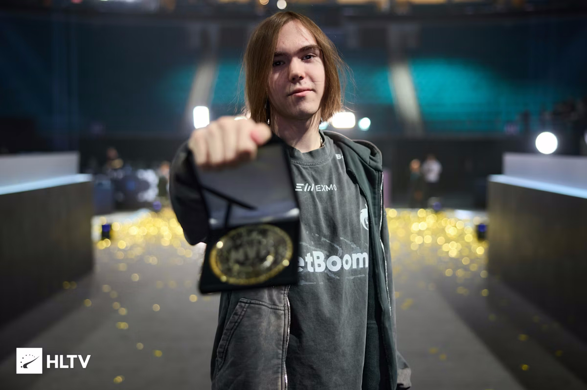

donk

donk — российский профессиональный игрок в Counter-Strike 2. Его настоящее имя — Данил Крышковец. Он стал одним из самых заметных молодых игроков на профессиональной сцене.
donk выступает за Team Spirit. Его часто выделяют за агрессивный стиль игры и уверенные действия в начале раундов.